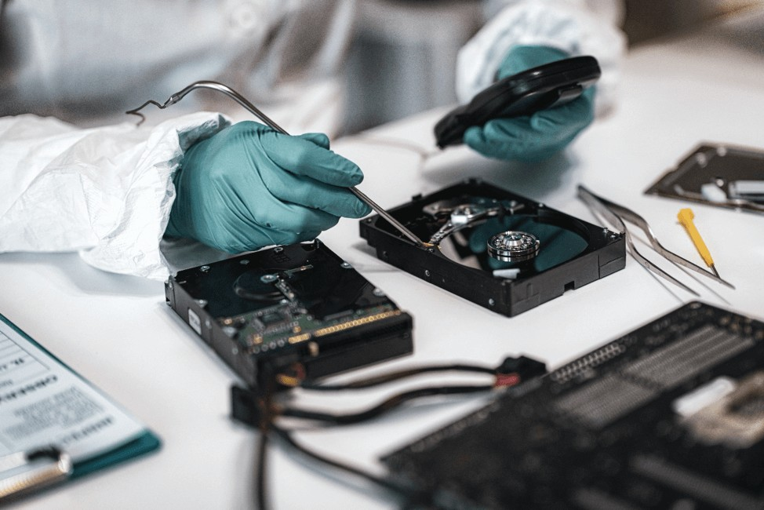

What Is Digital Forensics?
Digital forensics focuses on examining data from computers, mobile devices, and other digital systems to find evidence related to an incident.
Investigators follow strict procedures so the evidence stays reliable throughout the entire process.

Steps in a Digital Forensics Investigation
Main phases
- Identify relevant systems and data
- Preserve evidence to prevent changes
- Collect data using proper tools
- Analyze digital artifacts
- Report findings clearly
What must be documented
- Chain of custody
- Hash values
- Tools and methods used
- Timeline of actions